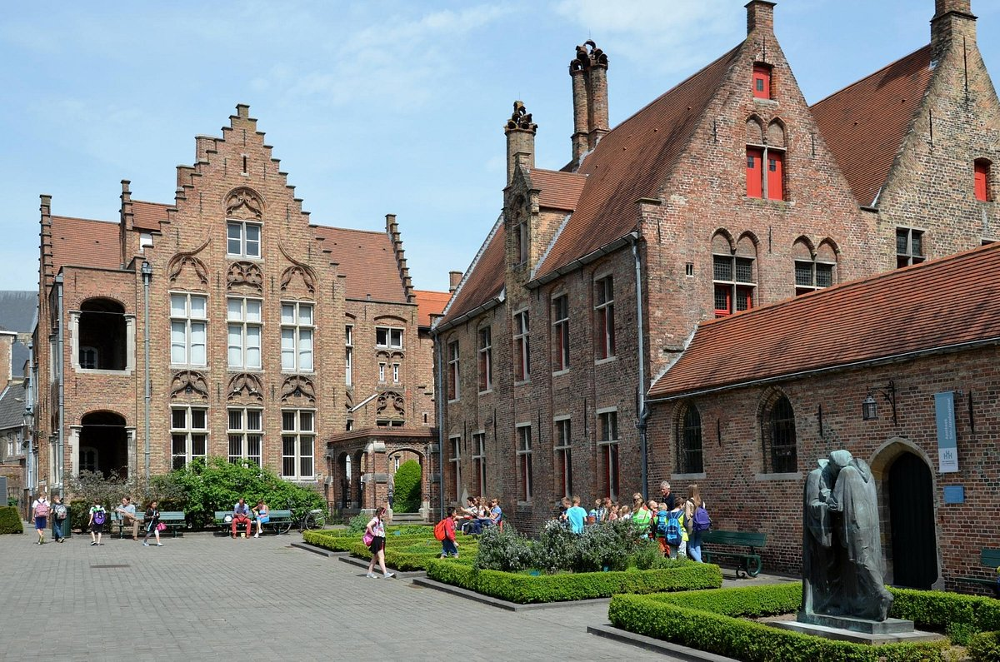

Wist je dat?
Brugge, ook wel bekend als het 'Venetië van het Noorden', dankt deze naam aan de vele grachten die door de stad lopen.
Het 13e-eeuwse Belfort van Brugge, een UNESCO Werelderfgoed, rijst 83 meter hoog op en biedt een schitterend uitzicht over de stad.
Brugge staat wereldwijd bekend als een topbestemming voor chocoladeliefhebbers.
Brugge kent een eeuwenlange brouwtraditie. Vandaag de dag zijn er nog diverse ambachtelijke brouwerijen actief die traditionele Belgische bieren zoals Brugse Zot en Straffe Hendrik produceren.
Brugge is beroemd om zijn kantproductie, een eeuwenoude traditie waarbij ambachtslieden nog steeds de delicate kunst van kantklossen beoefenen.
Zien en doen
Het Sint-Janshospitaal, een van Europa's oudste en best bewaarde hospitaalgebouwen uit het midden van de 12e eeuw, bood onderdak aan zieken en behoeftige mensen. De middeleeuwse ziekenzalen, kapel en indrukwekkende zolder zijn nu omgevormd tot een eigentijds museum, met 'gastvrijheid' als centraal thema. Je wordt ondergedompeld in de geschiedenis van zorg en genezing. Je vindt er een diverse kunstcollectie en gebruiksvoorwerpen, inclusief topstukken van de Vlaamse primitief Hans Memling, zoals het beroemde Ursulaschrijn. Vergeet ook zeker niet een bezoek te brengen aan de bijbehorende hospitaalapotheek met authentiek 17e-eeuws interieur. 
Eindig je daguitstap in het Minnewater, een van de mooiste plekken in Brugge
Vroeger geloofden mensen dat deze plek de thuis van minnen en watergeesten was. Zo kreeg dit stadsmeer zijn naam. Met een tragische liefdeslegende, betoverende bomen en weelderig groen is het een romantische plek bij uitstek.
Langs de oevers van het meer bevinden zich gezellige wandelpaden en bankjes waar bezoekers kunnen ontspannen en genieten van het uitzicht. Een van de meest opvallende kenmerken van het Minnewater is de imposante Minnewaterbrug die over het meer loopt.
Deze sierlijke boogbrug biedt een adembenemend uitzicht op het rustige water en de omliggende omgeving.